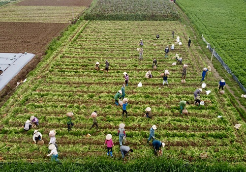

Từ trung tâm thành phố Hải Dương bạn đi về phía đường Nguyễn Lương Bằng,
sau đó rẽ trái vào Nguyễn Lương Bằng,
tiếp theo chếch sang phải vào đường Nguyễn Thị Duệ.
Từ bến xe Hải Âu bạn đi về phía đường Hoàng Ngân, sau đó rẽ trái tại cầu vượt 559, tiếp theo bạn rẽ phải vào QL37, sau đó rẽ phải về hướng đường Hoàng Ngân, sau đó rẽ trái vào Hoàng Ngân, tiếp theo rẽ trái vào đường Đồng Niên, sau đó rẽ phải vào Phố Văn.
Từ bến xe Hải Âu bạn đi về phía đường Hoàng Ngân, sau đó rẽ trái tại cầu vượt 559, tiếp theo bạn rẽ phải vào QL37, sau đó rẽ phải về hướng đường Hoàng Ngân, sau đó rẽ trái vào Hoàng Ngân, tiếp theo rẽ trái vào đường Đồng Niên, sau đó rẽ phải vào Phố Văn.

Cánh đồng cà rốt này thuộc địa phận xã Đức Chính, huyện Cẩm Giàng, Hải Dương.
Nhiều người nghĩ rằng các cánh đồng rau củ chẳng hạn như cánh đồng cà rốt đây
đơn thuần là mảnh đất canh tác, trồng trọt của người nông dân.
Nhưng những năm trở lại đây, trào lưu chụp ảnh tại cánh đồng rau củ ngày càng phổ biến hơn.
Nhờ nhiều bài viết, các bức ảnh lung linh được chụp tại đây mà cánh đồng cà rốt ngày
càng thu hút được nhiều bạn tham quan cũng như check – in hơn.
Cánh đồng cà rốt ở đây được người dân chăm sóc kĩ càng,
tạo thành từng luống thẳng tắp trông vô cùng bắt mắt tạo điều kiện cho bức ảnh sống ảo của bạn.
Bầu trời trong xanh hòa với màu xanh lá đặc trưng của cánh đồng
tạo nên khung cảnh thiên nhiên mang đậm nét thôn quê dân dã.
Cảnh quan nơi đây lại rất biết chiều lòng người, chỉ cần đến đây thì bạn đã có thể
mang về cho mình hàng loạt các bộ ảnh xinh xắn,
đội một chiếc nón rộng vàng kết hợp với đôi ủng hay giày boots
thì trông bạn chẳng khác gì người nông dân thực thụ đang thu hoạch thành phẩm của mình.
Cánh đồng cà rốt không chỉ là nơi sống ảo mà đến đây bạn còn được nghỉ ngơi,
thư giãn đầu óc bởi khung cảnh yên bình, nhẹ nhàng.
Được sự hướng dẫn nhiệt tình của người nông dân sau đó sẽ tận tay trồng và
thu hoạch cà rốt sẽ cho bạn trải nghiệm rất thú vị trong chuyến đi của bạn.
